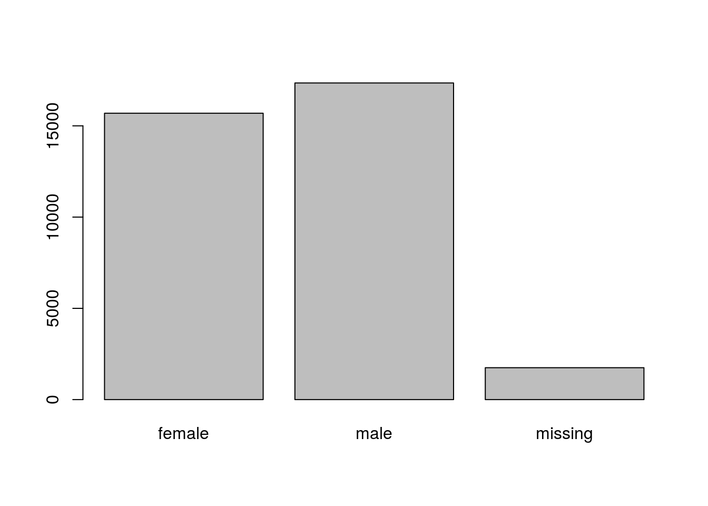

Chapter 5 Starting with data
The following material is based on Data Carpentry’s the Data analisis and visualisation lessons.
Learning Objectives:
- Describe what a data frame is.
- Load external data from a .csv file into a data frame in R.
- Summarize the contents of a data frame in R.
- Manipulate categorical data in R.
- Change how character strings are handled in a data frame.
- Format dates in R
5.1 Presentation of the Survey Data
We are studying the species and weight of animals caught in plots in our study area. The dataset is stored as a comma separated value (CSV) file. Each row holds information for a single animal, and the columns represent:
| Column | Description |
|---|---|
| record_id | Unique id for the observation |
| month | month of observation |
| day | day of observation |
| year | year of observation |
| plot_id | ID of a particular plot |
| species_id | 2-letter code |
| sex | sex of animal (“M”, “F”) |
| hindfoot_length | length of the hindfoot in mm |
| weight | weight of the animal in grams |
| genus | genus of animal |
| species | species of animal |
| taxa | e.g. Rodent, Reptile, Bird, Rabbit |
| plot_type | type of plot |
We are going to use the R function download.file() to download the CSV file that contains the survey data from figshare, and we will use read.csv() to load into memory the content of the CSV file as an object of class data.frame.
To download the data into the data/ subdirectory, run the following:
download.file("https://ndownloader.figshare.com/files/2292169",
"data/portal_data_joined.csv")You are now ready to load the data:
surveys <- read.csv('data/portal_data_joined.csv')This statement doesn’t produce any output because, as you might recall, assignments don’t display anything. If we want to check that our data has been loaded, we can print the variable’s value: surveys.
Wow… that was a lot of output. At least it means the data loaded properly. Let’s check the top (the first 6 lines) of this data frame using the function head():
head(surveys)## record_id month day year plot_id species_id sex hindfoot_length weight
## 1 1 7 16 1977 2 NL M 32 NA
## 2 72 8 19 1977 2 NL M 31 NA
## 3 224 9 13 1977 2 NL NA NA
## 4 266 10 16 1977 2 NL NA NA
## 5 349 11 12 1977 2 NL NA NA
## 6 363 11 12 1977 2 NL NA NA
## genus species taxa plot_type
## 1 Neotoma albigula Rodent Control
## 2 Neotoma albigula Rodent Control
## 3 Neotoma albigula Rodent Control
## 4 Neotoma albigula Rodent Control
## 5 Neotoma albigula Rodent Control
## 6 Neotoma albigula Rodent ControlNote
read.csv assumes that fields are delineated by commas, however, in several countries, the comma is used as a decimal separator and the semicolon (;) is used as a field delineator. If you want to read in this type of files in R, you can use the read.csv2 function. It behaves exactly like read.csv but uses different parameters for the decimal and the field separators. If you are working with other format, they can be both specified by the user. Check out the help for read.csv() to learn more.
5.2 What are data frames?
Data frames are the de facto data structure for most tabular data, and what we use for statistics and plotting.
A data frame can be created by hand, but most commonly they are generated by the functions read.csv() or read.table(); in other words, when importing spreadsheets from your hard drive (or the web).
A data frame is the representation of data in the format of a table where the columns are vectors that all have the same length. Because the column are vectors, they all contain the same type of data (e.g., characters, integers, factors).
We can see this when inspecting the structure of a data frame with the function str():
str(surveys)## 'data.frame': 34786 obs. of 13 variables:
## $ record_id : int 1 72 224 266 349 363 435 506 588 661 ...
## $ month : int 7 8 9 10 11 11 12 1 2 3 ...
## $ day : int 16 19 13 16 12 12 10 8 18 11 ...
## $ year : int 1977 1977 1977 1977 1977 1977 1977 1978 1978 1978 ...
## $ plot_id : int 2 2 2 2 2 2 2 2 2 2 ...
## $ species_id : Factor w/ 48 levels "AB","AH","AS",..: 16 16 16 16 16 16 16 16 16 16 ...
## $ sex : Factor w/ 3 levels "","F","M": 3 3 1 1 1 1 1 1 3 1 ...
## $ hindfoot_length: int 32 31 NA NA NA NA NA NA NA NA ...
## $ weight : int NA NA NA NA NA NA NA NA 218 NA ...
## $ genus : Factor w/ 26 levels "Ammodramus","Ammospermophilus",..: 13 13 13 13 13 13 13 13 13 13 ...
## $ species : Factor w/ 40 levels "albigula","audubonii",..: 1 1 1 1 1 1 1 1 1 1 ...
## $ taxa : Factor w/ 4 levels "Bird","Rabbit",..: 4 4 4 4 4 4 4 4 4 4 ...
## $ plot_type : Factor w/ 5 levels "Control","Long-term Krat Exclosure",..: 1 1 1 1 1 1 1 1 1 1 ...5.3 Inspecting data.frame Objects
We already saw how the functions head() and str() can be useful to check the content and the structure of a data frame. Here is a non-exhaustive list of functions to get a sense of the content/structure of the data. Let’s try them out!
- Size:
dim(surveys)- returns a vector with the number of rows in the first element, and the number of columns as the second element (the dimensions of the object)nrow(surveys)- returns the number of rowsncol(surveys)- returns the number of columns
- Content:
head(surveys)- shows the first 6 rowstail(surveys)- shows the last 6 rows
- Names:
names(surveys)- returns the column names (synonym ofcolnames()fordata.frameobjects)rownames(surveys)- returns the row names
- Summary:
str(surveys)- structure of the object and information about the class, length and content of each columnsummary(surveys)- summary statistics for each column
Note: most of these functions are “generic”, they can be used on other types of objects besides data.frame.
Challenge
Based on the output of
str(surveys), can you answer the following questions?
- What is the class of the object
surveys?- How many rows and how many columns are in this object?
- How many species have been recorded during these surveys?
5.4 Indexing and subsetting data frames
Our survey data frame has rows and columns (it has 2 dimensions), if we want to extract some specific data from it, we need to specify the “coordinates” we want from it. Row numbers come first, followed by column numbers. However, note that different ways of specifying these coordinates lead to results with different classes.
surveys[1, 1] # first element in the first column of the data frame (as a vector)
surveys[1, 6] # first element in the 6th column (as a vector)
surveys[, 1] # first column in the data frame (as a vector)
surveys[1] # first column in the data frame (as a data.frame)
surveys[1:3, 7] # first three elements in the 7th column (as a vector)
surveys[3, ] # the 3rd element for all columns (as a data.frame)
head_surveys <- surveys[1:6, ] # equivalent to head_surveys <- head(surveys): is a special function that creates numeric vectors of integers in increasing or decreasing order, test 1:10 and 10:1 for instance.
You can also exclude certain parts of a data frame using the “-” sign:
surveys[,-1] # The whole data frame, except the first column
surveys[-c(7:34786),] # Equivalent to head(surveys)As well as using numeric values to subset a data.frame (or matrix), columns can be called by name, using one of the four following notations:
surveys["species_id"] # Result is a data.frame
surveys[, "species_id"] # Result is a vector
surveys[["species_id"]] # Result is a vector
surveys$species_id # Result is a vectorFor our purposes, the last three notations are equivalent. RStudio knows about the columns in your data frame, so you can take advantage of the autocompletion feature to get the full and correct column name.
Challenge
Create a
data.frame(surveys_200) containing only the observations from row 200 of thesurveysdataset.Notice how
nrow()gave you the number of rows in adata.frame?
- Use that number to pull out just that last row in the data frame.
- Compare that with what you see as the last row using
tail()to make sure it’s meeting expectations.- Pull out that last row using
nrow()instead of the row number.- Create a new data frame object (
surveys_last) from that last row.Use
nrow()to extract the row that is in the middle of the data frame. Store the content of this row in an object namedsurveys_middle.Combine
nrow()with the-notation above to reproduce the behavior ofhead(surveys)keeping just the first through 6th rows of the surveys dataset.
## Answers
surveys_200 <- surveys[200, ]
surveys_last <- surveys[nrow(surveys), ]
surveys_middle <- surveys[nrow(surveys)/2, ]
surveys_head <- surveys[-c(7:nrow(surveys)),]5.5 Factors
When we did str(surveys) we saw that several of the columns consist of integers, however, the columns genus, species, sex, plot_type, … are of a special class called a factor. Factors are very useful and are actually something that make R particularly well suited to working with data, so we’re going to spend a little time introducing them.
Factors are used to represent categorical data. Factors can be ordered or unordered, and understanding them is necessary for statistical analysis and for plotting.
Factors are stored as integers, and have labels (text) associated with these unique integers. While factors look (and often behave) like character vectors, they are actually integers under the hood, and you need to be careful when treating them like strings.
Once created, factors can only contain a pre-defined set of values, known as levels. By default, R always sorts levels in alphabetical order. For instance, if you have a factor with 2 levels:
sex <- factor(c("male", "female", "female", "male"))R will assign 1 to the level "female" and 2 to the level "male" (because f comes before m, even though the first element in this vector is "male"). You can check this by using the function levels(), and check the number of levels using nlevels():
levels(sex)## [1] "female" "male"nlevels(sex)## [1] 2Sometimes, the order of the factors does not matter, other times you might want to specify the order because it is meaningful (e.g., “low”, “medium”, “high”), it improves your visualization, or it is required by a particular type of analysis. Here, one way to reorder our levels in the sex vector would be:
sex # current order## [1] male female female male
## Levels: female malesex <- factor(sex, levels = c("male", "female"))
sex # after re-ordering## [1] male female female male
## Levels: male femaleIn R’s memory, these factors are represented by integers (1, 2, 3), but are more informative than integers because factors are self describing: "female", "male" is more descriptive than 1, 2. Which one is “male”? You wouldn’t be able to tell just from the integer data. Factors, on the other hand, have this information built in. It is particularly helpful when there are many levels (like the species names in our example dataset).
5.5.0.1 Converting factors
If you need to convert a factor to a character vector, you use as.character(x).
as.character(sex)## [1] "male" "female" "female" "male"Converting factors where the levels appear as numbers (such as concentration levels, or years) to a numeric vector is a little trickier. The as.numeric() function returns the index values of the factor, not its levels, so it will result in an entirely new (and unwanted in this case) set of numbers. One method to avoid this is to convert factors to characters and then numbers.
Another method is to use the levels() function. Compare:
f <- factor(c(1990, 1983, 1977, 1998, 1990))
as.numeric(f) # Wrong! And there is no warning...## [1] 3 2 1 4 3as.numeric(as.character(f)) # Works...## [1] 1990 1983 1977 1998 1990as.numeric(levels(f))[f] # The recommended way.## [1] 1990 1983 1977 1998 1990Notice that in the levels() approach, three important steps occur:
- We obtain all the factor levels using
levels(f) - We convert these levels to numeric values using
as.numeric(levels(f)) - We then access these numeric values using the underlying integers of the vector
finside the square brackets
5.5.0.2 Renaming factors
When your data is stored as a factor, you can use the plot() function to get a quick glance at the number of observations represented by each factor level. Let’s look at the number of males and females captured over the course of the experiment:
## bar plot of the number of females and males captured during the experiment:
plot(surveys$sex)
In addition to males and females, there are about 1700 individuals for which the sex information hasn’t been recorded. Additionally, for these individuals, there is no label to indicate that the information is missing. Let’s rename this label to something more meaningful. Before doing that, we’re going to pull out the data on sex and work with that data, so we’re not modifying the working copy of the data frame:
sex <- surveys$sex
head(sex)## [1] M M
## Levels: F Mlevels(sex)## [1] "" "F" "M"levels(sex)[1] <- "missing"
levels(sex)## [1] "missing" "F" "M"head(sex)## [1] M M missing missing missing missing
## Levels: missing F MChallenge
- Rename “F” and “M” to “female” and “male” respectively.
- Now that we have renamed the factor level to “missing”, can you recreate the barplot such that “missing” is last (after “male”)?
## Answers
levels(sex)[2:3] <- c("female", "male")
sex <- factor(sex, levels = c("female", "male", "missing"))
plot(sex)
5.5.0.3 Using stringsAsFactors=FALSE
By default, when building or importing a data frame, the columns that contain characters (i.e., text) are coerced (=converted) into the factor data type. Depending on what you want to do with the data, you may want to keep these columns as character. To do so, read.csv() and read.table() have an argument called stringsAsFactors which can be set to FALSE.
In most cases, it’s preferable to set stringsAsFactors = FALSE when importing your data, and converting as a factor only the columns that require this data type.
Compare the output of str(surveys) when setting stringsAsFactors = TRUE (default) and stringsAsFactors = FALSE:
## Compare the difference between when the data are being read as
## `factor`, and when they are being read as `character`.
surveys <- read.csv("data/portal_data_joined.csv", stringsAsFactors = TRUE)
str(surveys)
surveys <- read.csv("data/portal_data_joined.csv", stringsAsFactors = FALSE)
str(surveys)
## Convert the column "plot_type" into a factor
surveys$plot_type <- factor(surveys$plot_type)Challenge
We have seen how data frames are created when using the
read.csv(), but they can also be created by hand with thedata.frame()function. There are a few mistakes in this hand-crafteddata.frame, can you spot and fix them? Don’t hesitate to experiment!animal_data <- data.frame(animal=c("dog", "cat", "sea cucumber", "sea urchin"), feel=c("furry", "squishy", "spiny"), weight=c(45, 8 1.1, 0.8))- Can you predict the class for each of the columns in the following example? Check your guesses using
str(country_climate):
- Are they what you expected? Why? Why not?
- What would have been different if we had added
stringsAsFactors = FALSEto this call?- What would you need to change to ensure that each column had the accurate data type?
country_climate <- data.frame( country=c("Canada", "Panama", "South Africa", "Australia"), climate=c("cold", "hot", "temperate", "hot/temperate"), temperature=c(10, 30, 18, "15"), northern_hemisphere=c(TRUE, TRUE, FALSE, "FALSE"), has_kangaroo=c(FALSE, FALSE, FALSE, 1) )
country, climate, temperature, and northern_hemisphere are factors; has_kangaroo is numeric. * using stringsAsFactors=FALSE would have made them character instead of factors * removing the quotes in temperature, northern_hemisphere, and replacing 1 by TRUE in the has_kangaroo column would probably what was originally intended.
The automatic conversion of data type is sometimes a blessing, sometimes an annoyance. Be aware that it exists, learn the rules, and double check that data you import in R are of the correct type within your data frame. If not, use it to your advantage to detect mistakes that might have been introduced during data entry (a letter in a column that should only contain numbers for instance).
5.6 Formatting Dates
One of the most common issues that new (and experienced!) R users have is converting date and time information into a variable that is appropriate and usable during analyses. As a reminder from earlier in this lesson, the best practice for dealing with date data is to ensure that each component of your date is stored as a separate variable. Using str(), We can confirm that our data frame has a separate column for day, month, and year, and each contains integer values.
str(surveys)We’re going to be using the ymd() function from the package lubridate (this package gets installed during the installation of the tidyverse package). This function is designed to take a vector representing year, month, and day and convert that information to a POSIXct vector. POSIXct is a class of data recognized by R as being a date or date and time. The argument that the function requires is relatively flexible, but, as a best practice, is a character vector formatted as “YYYY-MM-DD”.
Start by loading the required package:
library(lubridate)Create a character vector from the year, month, and day columns of surveys using paste():
paste(surveys$year, surveys$month, surveys$day, sep="-")
# sep indicates the character to use to separate each componentThis character vector can be used as the argument for ymd():
ymd(paste(surveys$year, surveys$month, surveys$day, sep="-"))The resulting POSIXct vector can be added to surveys as a new column called date:
surveys$date <- ymd(paste(surveys$year, surveys$month, surveys$day, sep="-"))## Warning: 129 failed to parse.str(surveys) # notice the new column, with 'date' as the class## 'data.frame': 34786 obs. of 14 variables:
## $ record_id : int 1 72 224 266 349 363 435 506 588 661 ...
## $ month : int 7 8 9 10 11 11 12 1 2 3 ...
## $ day : int 16 19 13 16 12 12 10 8 18 11 ...
## $ year : int 1977 1977 1977 1977 1977 1977 1977 1978 1978 1978 ...
## $ plot_id : int 2 2 2 2 2 2 2 2 2 2 ...
## $ species_id : Factor w/ 48 levels "AB","AH","AS",..: 16 16 16 16 16 16 16 16 16 16 ...
## $ sex : Factor w/ 3 levels "","F","M": 3 3 1 1 1 1 1 1 3 1 ...
## $ hindfoot_length: int 32 31 NA NA NA NA NA NA NA NA ...
## $ weight : int NA NA NA NA NA NA NA NA 218 NA ...
## $ genus : Factor w/ 26 levels "Ammodramus","Ammospermophilus",..: 13 13 13 13 13 13 13 13 13 13 ...
## $ species : Factor w/ 40 levels "albigula","audubonii",..: 1 1 1 1 1 1 1 1 1 1 ...
## $ taxa : Factor w/ 4 levels "Bird","Rabbit",..: 4 4 4 4 4 4 4 4 4 4 ...
## $ plot_type : Factor w/ 5 levels "Control","Long-term Krat Exclosure",..: 1 1 1 1 1 1 1 1 1 1 ...
## $ date : Date, format: "1977-07-16" "1977-08-19" ...Did you notice the warning message? Let’s investigate what is happening. When lubridate fails to parse a date, it will return NA. We can use the functions we saw previously to deal with missing data to identify the rows in our data frame that are failing. First, let’s create a vector that contains our dates as a character vector:
surveys_dates <- paste(surveys$year, surveys$month, surveys$day, sep = "-")
head(surveys_dates)## [1] "1977-7-16" "1977-8-19" "1977-9-13" "1977-10-16" "1977-11-12"
## [6] "1977-11-12"The vector surveys_dates contains all the dates from our dataset, in the same order as they are in the data frame. We can therefore use the is.na() function on the surveys data frame to locate the elements in the vectors surveys_dates that failed to parse:
surveys_dates[is.na(surveys$date)]## [1] "2000-9-31" "2000-4-31" "2000-4-31" "2000-4-31" "2000-4-31"
## [6] "2000-9-31" "2000-9-31" "2000-9-31" "2000-9-31" "2000-9-31"
## [11] "2000-4-31" "2000-4-31" "2000-4-31" "2000-4-31" "2000-9-31"
## [16] "2000-9-31" "2000-4-31" "2000-9-31" "2000-9-31" "2000-4-31"
## [21] "2000-4-31" "2000-9-31" "2000-4-31" "2000-4-31" "2000-4-31"
## [26] "2000-4-31" "2000-9-31" "2000-4-31" "2000-4-31" "2000-9-31"
## [31] "2000-9-31" "2000-9-31" "2000-9-31" "2000-9-31" "2000-4-31"
## [36] "2000-4-31" "2000-4-31" "2000-4-31" "2000-9-31" "2000-9-31"
## [41] "2000-9-31" "2000-9-31" "2000-4-31" "2000-4-31" "2000-9-31"
## [46] "2000-9-31" "2000-9-31" "2000-4-31" "2000-4-31" "2000-4-31"
## [51] "2000-4-31" "2000-9-31" "2000-4-31" "2000-9-31" "2000-9-31"
## [56] "2000-4-31" "2000-4-31" "2000-4-31" "2000-4-31" "2000-9-31"
## [61] "2000-9-31" "2000-9-31" "2000-4-31" "2000-9-31" "2000-9-31"
## [66] "2000-9-31" "2000-9-31" "2000-9-31" "2000-4-31" "2000-4-31"
## [71] "2000-4-31" "2000-4-31" "2000-9-31" "2000-9-31" "2000-4-31"
## [76] "2000-4-31" "2000-4-31" "2000-4-31" "2000-4-31" "2000-4-31"
## [81] "2000-4-31" "2000-4-31" "2000-4-31" "2000-9-31" "2000-9-31"
## [86] "2000-9-31" "2000-4-31" "2000-4-31" "2000-9-31" "2000-9-31"
## [91] "2000-9-31" "2000-9-31" "2000-9-31" "2000-4-31" "2000-4-31"
## [96] "2000-4-31" "2000-4-31" "2000-4-31" "2000-4-31" "2000-9-31"
## [ reached getOption("max.print") -- omitted 29 entries ]Why did these dates fail to parse? If you had to use these data for your analyses, how would you deal with this situation?